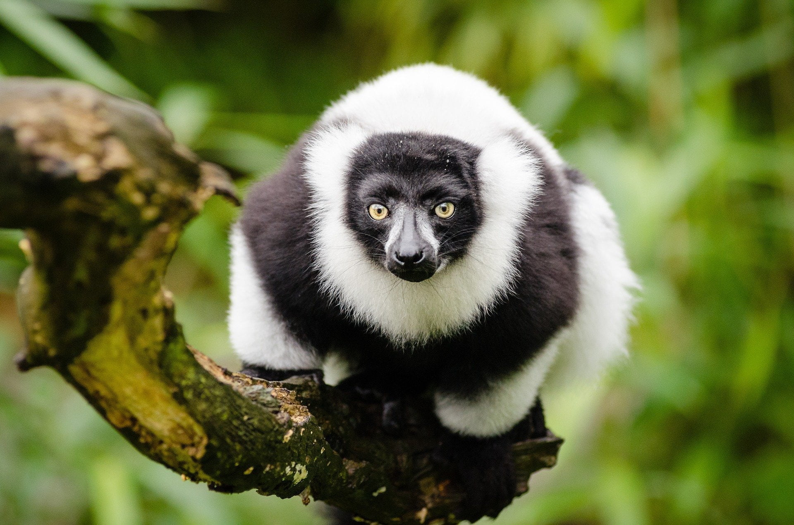
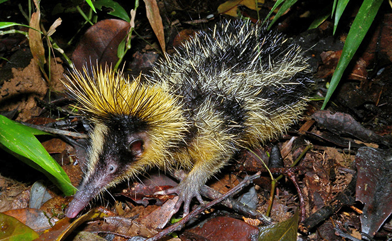
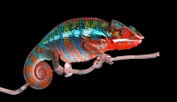
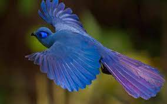
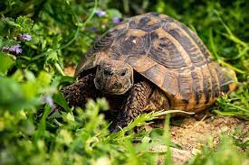

- Le lémurien:
- au Parc national d’Andasibe-Mantadia
- à la Réserve naturelle intégrale de Zahamena
- au Parc national de Ranomafana
- au Parc national d’Isalo
- à la Réserve spéciale d’Analamazaotra
- au Parc Masoala et Nosy Mangabe
- Le tenrec:
- le Parc national de Ranomafana
- la Réserve naturelle intégrale d’Andohahela
- la Réserve spéciale d’Ambohitantely
- le Parc national d’Ankarafantsika
- le Parc national de Masoala
- caméléon panthère
- baleine à bosse:
- Le coua Bleu
- La tortue étoilée:

Les lémuriens sont originaires de Madagascar et des îles avoisinantes, et sont considérés comme étant parmi les plus anciens primates vivants.
Ils sont souvent appelés les « singes fantômes » en raison de leurs grands yeux et de leurs habitudes nocturnes.
Ils ont une variété de tailles, allant de moins de 30 g pour les plus petits, jusqu’à plus de 9 kg pour les plus grands.
Ils se nourrissent principalement de fruits, de feuilles et d’insectes, bien que certaines espèces soient également connues pour manger des oiseaux, des souris et même des serpents.
Lors d’un séjour à Madagascar, ils peuvent être observés :

Le tenrec est un petit mammifère ressemblant à un croisement entre une taupe et un hérisson.
Il existe environ 30 espèces différentes de tenrecs, chacune avec son apparence et son comportement spécifiques.
Ils se nourrissent essentiellement d’insectes, mais certains mangent aussi des fruits et des petits animaux.
Ils sont nocturnes et passent la majeure partie de leur temps à creuser des terriers ou à chercher de la nourriture dans la végétation dense de Madagascar.
Les tenrecs sont des animaux nocturnes et très timides, cependant il est possible de les observer au cœur de sites naturels malgaches comme :

Le caméléon panthère est une espèce de caméléon originaire de Madagascar.
Il est connu pour son habileté à changer de couleur en fonction de son environnement.
Cette capacité lui permet de se fondre dans le paysage et de se cacher des prédateurs, tout en étant capable de chasser en embuscade.
Il peut ainsi passer d’une couleur verte à une couleur rouge, en passant par le jaune et le bleu.
Le caméléon panthère s’observe dans les forêts tropicales humides et les zones boisées du nord et de l’est de Madagascar.
Par exemple, le parc national de l’Andasibe-Mantadia, le parc national de Masoala et la réserve naturelle intégrale de Betampona sont tous des endroits connus pour abriter des caméléons panthères.

La baleine à bosse, Megaptera novaeangliae de son nom scientifique, peut être observée dans les eaux de Madagascar pendant la saison de reproduction, entre juin et septembre.
Elles migrent chaque année vers les eaux chaudes de l’océan Indien pour se reproduire et donner naissance à leurs petits.
Les eaux autour de Madagascar sont l’un des sites de reproduction les plus importants pour les baleines à bosse dans l’océan Indien occidental.
Pendant cette période, les baleines peuvent être observées depuis les plages de l’île et lors de sorties en bateau. Parmi les sites connus :
la baie d’Antongil près de la ville de Maroantsetra,
la baie de Sainte-Marie près de la ville de Nosy Boraha,
ou encore celle de Diego-Suarez près de la ville d’Antsiranana.

Le coua bleu, également connu sous le nom de coua de Radama ou de coua à bec rouge, est une espèce d’oiseau endémique de Madagascar.
Il mesure environ 44 cm de long et pèse environ 225 g. Il a un plumage principalement bleu foncé avec une tache blanche sur la nuque et une bande blanche sur la queue.
Son bec et ses yeux sont rouges, ou jaunes selon l’âge. Il est connu pour son comportement de nidification inhabituel : la femelle pond ses œufs dans les nids d’autres oiseaux et laisse les oiseaux hôtes couver et élever les œufs.
Il vit dans les forêts primaires et secondaires de l’est de Madagascar et peut-être observé dans les parcs nationaux de l’île comme ceux de Ranomafana, d’Andasibe-Mantadia et de Zahamena.

La tortue étoilée de Madagascar, également connue sous le nom de tortue radiée, est une espèce de tortue terrestre endémique de l’île.
Elle est célèbre pour sa carapace en forme d’étoile, avec des motifs jaunes et noirs caractéristiques.
Elle peut atteindre jusqu’à 40 cm de long et peser 16 kg.
Elles ont une alimentation herbivore et se nourrissent principalement de plantes, de fruits et de légumes.